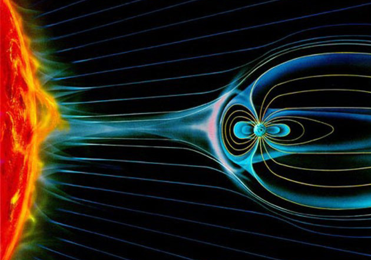

Aurora borealis
Aurora Borealis are these green and sometimes other colors on the night sky caused by lot of charged particles entering our atmosphere. It can be seen in the north part of the globe near polar circle, while near the south polar circle this light phenomenon is called Aurora Australis.
This is how is happened: Sun is continuously streaming particles called solar wind. These particles (plasma: electrons, protons, ions) fly in space and interacts with magnetic fields of planets.
Earth's magnetosphere is pretty much deformed by the solar wind. Towards the sun magnetosphere is squeezed to ca. 65 000 km and on the night sun is extended up tu ca. 6 300 000 km (!!!), all this is done by the huge pressure of sun particles.
This magnetic field lines deviations to the sides allow make lower charge density at the poles, let's call it a funnel, and charged particles are drowned down this funnel by the voltage difference.
Aurora are in fact caused by particles which were drawn to the elongated night side of magnetosphere and then are they drawned back to the polar funnels by the electric potential difference between magnetic poles and magnetic fields on the night tail, while locally are drived electrons by the magnetic force.

Sun is rotating every 27 days, and intensity and speed of solar wind is changing. Thus also Earth's magnetosphere has a time to relax, when comes slower particles with lower mass. These lower energy particles are deflected from the Earth by Van Allen Belts.
As charged particles enter the atmosphere, they are spinning down the Earth's magnetic lines. Particles interact with atoms and molecules, and excited molecules and atoms interact between themselves, and sometimes there are also ionised and those emitting electrons can ionise nearby atoms, or sometimes, when they have enough kinetic energy they can fly along magnetic lines out of the atmosphere.
The aurora color is due to the emitted light from exited atoms in the ionophere. Green (557.7 nm) and red (630 nm) aurora is from oxygen atoms in ionosphere.
These emission are longer than usual (0.7 s for green and 107 s for red respectively) because of both transitions are forbidden in oxygen atoms. Since all particle transitions should "most probably" obey quatum mehanics seletion rules, these forbidden transitions
are though just very less probable and change in symmetries take longer times.
When Aurora reaches the lower layers of atmosphere, which is very uncommon, molecular nitrogen and ionized molecular nitrogen take over in producing visible light emission, radiating at a large number of wavelengths in both red and blue parts of the spectrum, with 428 nm (blue) being dominant. Blue and purple emissions, typically at the lower edges of the "curtains", show up at the highest levels of solar activity. The molecular nitrogen transitions are much faster than the atomic oxygen ones because they are not forbidden by quatum mechanics laws of numbers.
Aurora and particles from space in our atmosphere are studied in Norway. They think about the connection of aurora chemistry with the deplation of ozone in the atmosphere and therefore enhancing global warming